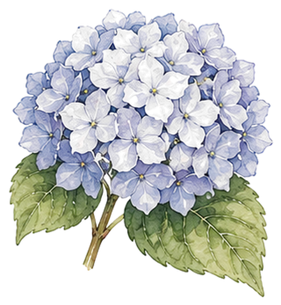
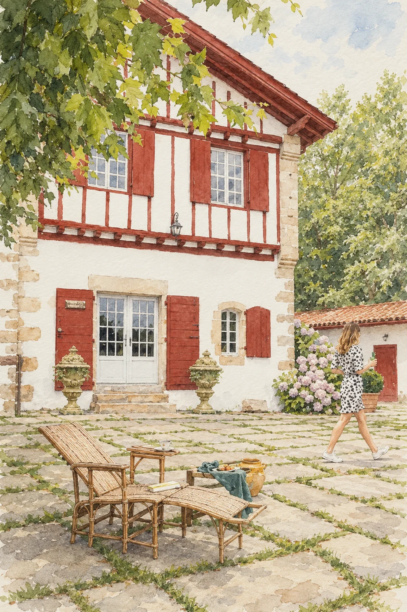
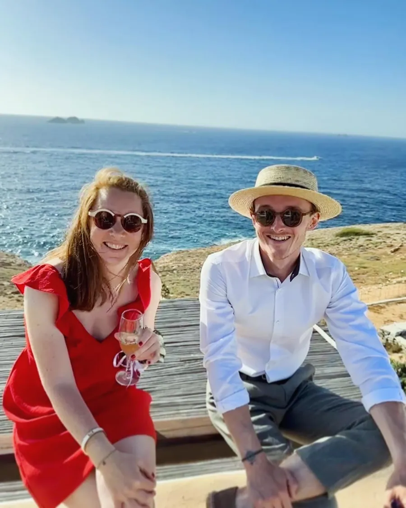
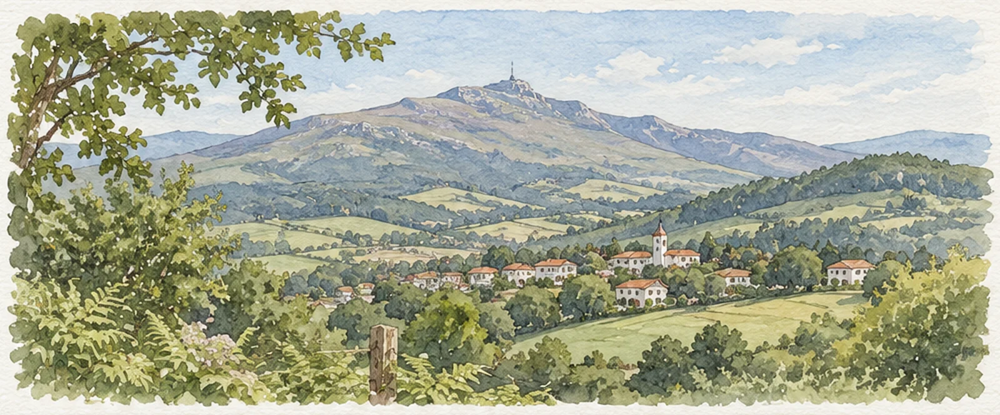
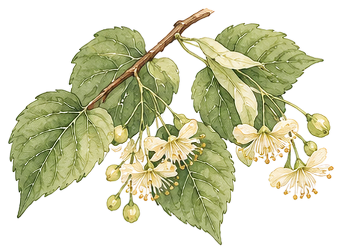
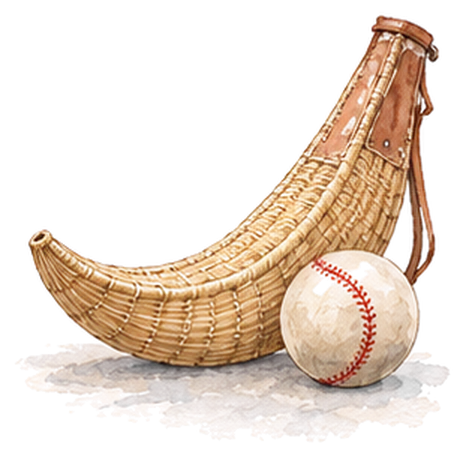
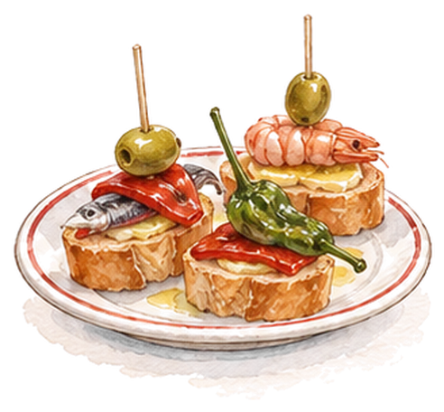
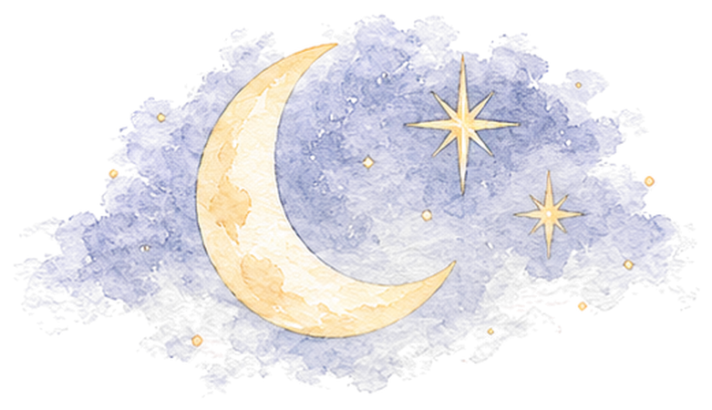
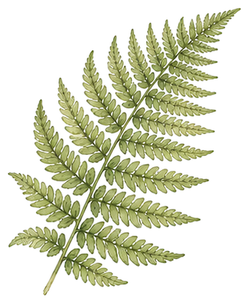

15 h
Le oui, face à l’océan
Messe de mariage sous les galeries de bois de l’église Saint-Nicolas, à deux pas de la mer.
Église Saint-Nicolas, Guéthary
se marient le samedi 12 juin 2027 à 15 h, en l’église Saint-Nicolas de Guéthary, puis vous attendent à Sare, au milieu des fougères.


Encore

avant que les cloches de Saint-Nicolas ne sonnent pour nous, le samedi 12 juin 2027 à 15 h.

Il y a des lieux qui ressemblent à ce qu’on voudrait vivre. Pour nous, c’est le Pays basque : l’océan à Guéthary le matin, la Rhune dans la brume le soir, et une vieille ferme labourdine au milieu des fougères.
Nous avons hâte de vous y retrouver pour nous dire oui, puis pour danser tard sous les tilleuls.
Vous trouverez ici de quoi préparer votre venue. Si une question reste sans réponse, écrivez-nous.
Marine & Pierre
La cérémonie sur la côte, la fête dans les collines : suivez la journée.
15 h
Messe de mariage sous les galeries de bois de l’église Saint-Nicolas, à deux pas de la mer.
Église Saint-Nicolas, Guéthary


16 h 30
Les navettes partent du parvis : trente-cinq minutes de virages jusqu’à Sare, au pied de la Rhune.
Départ du parvis de l’église




17 h 30
Txakoli et pintxos sous les tilleuls du parc, et une partie de pelote pour les plus vaillants.
Le domaine, Sare



20 h
Dîner sur la terrasse face aux Pyrénées, puis le bal à 23 h. Fandango obligatoire.
Terrasse du domaine
